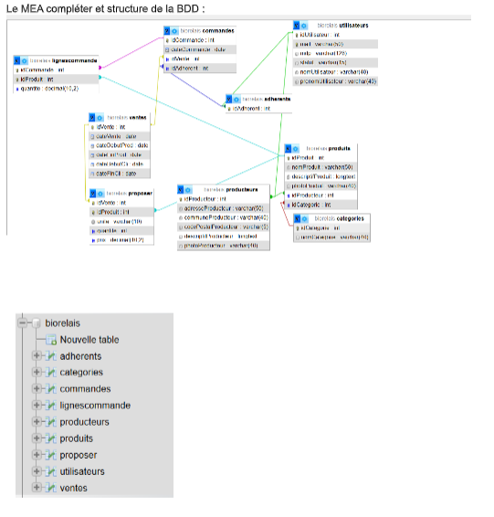
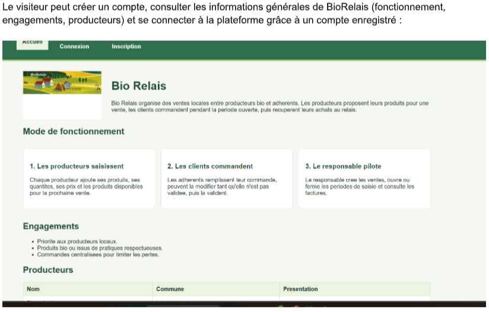
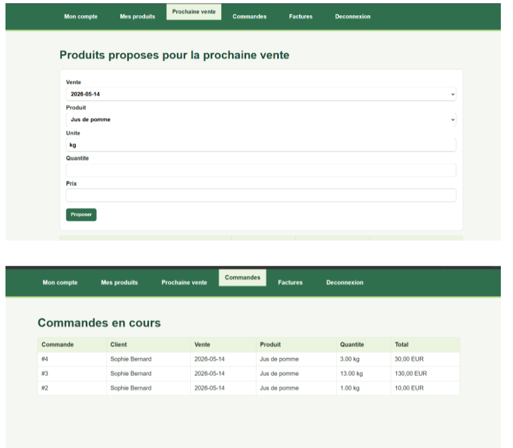
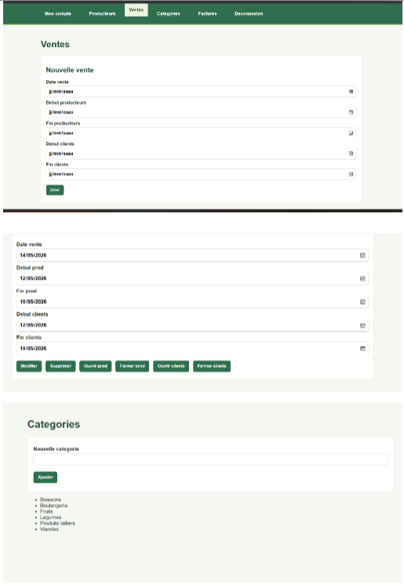
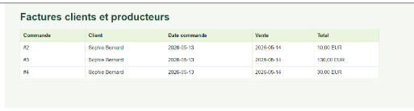

Bio Relais - Mettre à disposition un service informatique
TP2 Bio Relais - PHP Objet / MySQL - Application en localhostJ'ai développé seul une application web fonctionnelle en local pour répondre au besoin de Bio Relais. L'application n'a pas été mise en production, mais elle permettait de tester les fonctionnalités prévues dans le cahier des charges depuis un environnement localhost.
Le service développé permettait de gérer plusieurs parcours utilisateurs : visiteur, client, producteur et responsable. Chaque profil disposait de fonctionnalités adaptées à son rôle dans l'organisation.
Service développé en local
- application web en PHP objet structurée selon le modèle MVC,
- base de données MySQL pour stocker les utilisateurs, producteurs, produits, ventes et commandes,
- formulaires de création, modification et suppression,
- gestion des commandes côté client,
- gestion des produits et propositions côté producteur,
- fonctionnalités de gestion côté responsable.
Cette compétence est validée car j'ai préparé un service informatique complet et testable en local. Le projet m'a permis de relier une interface web, des traitements PHP, des formulaires et une base de données MySQL pour obtenir une application cohérente.






Ouvrir en local
Ce projet est dynamique : il dépend de PHP, de MySQL et d'une base de données locale. En ligne, un lien localhost ne fonctionnerait pas pour les visiteurs, car localhost pointe toujours vers leur propre ordinateur.
biorelais, puis adapter les identifiants de connexion à la base de données.